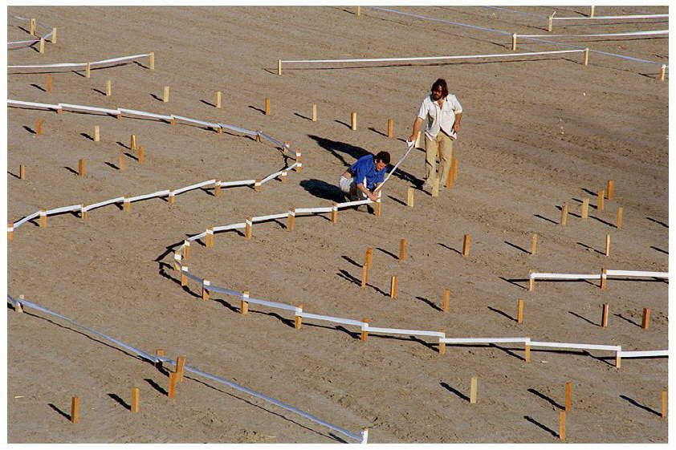

La historia del laberinto
El primer monumento en su tipo realizado para recordar a Borges tal cual era su deseo:
"Quiero laureles verdes, reales, vivos, no esos de oro o metal" (Roma, 1984)
Georgie y Susana.
Fue el conocimiento que compartían sobre literatura inglesa lo que en un primer momento cubrió sus conversaciones. El interés y las charlas dieron paso a una amistad que duraría toda la vida. Una amistad profunda y de mutuo respeto. Por alguna extraña razón el que era tan admirado, esta vez admiraba. Se reunian en la Quinta "San domenico" donde formaron un grupo de lectura de poemas y cuentos. Y en el departamento de Susana, en Recoleta, a tomar el te o almorzar.

El diseñador: Randoll Coate.
Secretario de prensa de la Embajada Britanica en Argentina en los 50, asiduo lector, fanatico de borges y los laberintos. Amigo de Susana Bombal a quien le pidio conocer a Borges, quien intercedio en dicho encuentro. Randoll al terminar su carrera diplomática devino en un muy prestigioso diseñador de laberintos para Castillos en toda Europa. En el año 79 cuando él tiene un sueño revelador: El memorial de Borges “debía ser un Laberinto y no una estatua llena de angelitos”.Contó su sueño en una carta a Susana ya que ella aparecía en el sueño y algún papel debía jugar.
El Laberinto

El impulsor: Camilo Aldao
El mayor de 5 hermanos, una persona extraordinariamente instruida y fiel compañero y sobrino predilecto de Susana Bolbal. Para ella era el hijo que la vida le nego.
El mayor de 5 hermanos, una persona extraordinariamente instruida y fiel compañero y sobrino predilecto de Susana Bolbal. Para ella era el hijo que la vida le nego.
Al morir Susana en 1991, Camilo hereda sus cosas y en ese revisar sobre qué conservar y que no. Encontrando la carta de Randoll a Susana contándole su sueño de hacer un Laberinto. Camilo,que era muy místico y suceptible, tomó esto como un mensaje de Susana: El laberinto debía hacerse.
Con esa idea escribe a Randoll y parte en avión a Londres a conocerlo personalmente. Allí Randoll le entrega el diseño con la esperanza y el mandato de que se realizara.
Luego de años, se contacta con María Kodama a quien le dona el diseño del laberinto en nombre de Coate. A este nuevo equipo se le suma Carlos Thays (nieto) quien lleva a cabo el diseño del master plan del Laberinto y juntos los tres intentan durante 10 años lograr plantarlo en algún lugar de la ciudad de Buenos Aires sin éxito
Ya viviendo en San Rafael, Camilo relee el la carta de Randoll y comprende que el papel de Susana Bombal en el sueño. El Laberinto debia hacerse en Finca "Los Alamos" casa natal de Susana.
LOS LABERINTICOS
En 1999, en un evento realizado en la Finca, Camilo conoce a Gabriel Mortarotti, Andrés Ridois y Mauricio Runno y le dieron nuevos ímpetus al proyecto, por lo que fueron bautizados como Los Laberínticos.
Viajaron a Londres y volvieron con el diseño actualizado que ya había terminado Randoll. Esta vez incluía las iniciales de Maria Kodama en el diseño.
Octubre del 2003
4 amigos terminan de plantar el último boxus.
"Una obra comienza a latir, deja el papel y se hace realidad. Vive, respira."